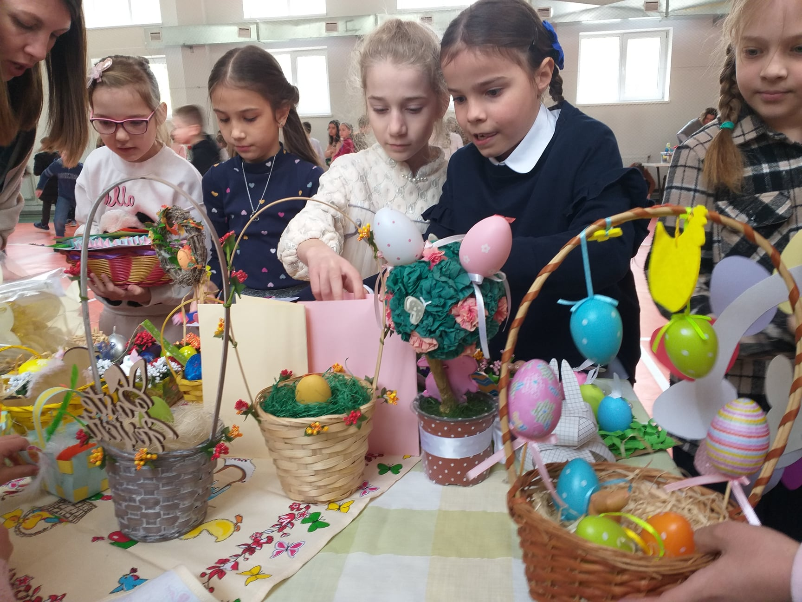

Târgul de Paști – o tradiție frumoasă a instituției
PUBLICAT 2 LUNI ÎN URMĂ
De
Marina Olevschi
Târgul de Paști, o tradiție frumoasă a instituției, a fost în sfârșit organizat după o perioadă îndelungată de pandemie.

Lucrările confecționate manual au surprins plăcut vizitatorii expoziției. La târg au putut fi procurate decorațiuni, felicitări, tablouri, suporturi pentru lumânări/ouă, semne de carte, torbițe, pungi pictate etc.
Unii elevi au fost pe post de vânzători, alții-cumpărători, negociatori, fotografi etc. O activitate de antreprenoriat la propriu.
Evenimentul s-a incheiat cu păscuțe pentru fiecare elev/copil din partea instituției.
Aprecieri și mulțumiri tuturor pentru implicare, organizare și desfășurarea cu succes a târgului.
Sărbători luminate și un Paște fericit!
Unii elevi au fost pe post de vânzători, alții-cumpărători, negociatori, fotografi etc. O activitate de antreprenoriat la propriu.
Evenimentul s-a incheiat cu păscuțe pentru fiecare elev/copil din partea instituției.
Aprecieri și mulțumiri tuturor pentru implicare, organizare și desfășurarea cu succes a târgului.
Sărbători luminate și un Paște fericit!